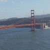
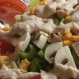
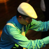
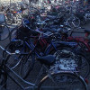

About me
I've been an assistant professor at UWL since 2013. It is an honor to work on a campus committed to diversity and inclusion, and I am especially happy to be a friendly face on campus. Want to know a bit more about me? Well, since you asked so nicely...

I am a native of California, born in San Francisco though I grew up in Santa Rosa, which is a short trip north of the city. Other places I have lived include Spain (for three months), The Netherlands, and South Korea (for a year each). Some of these places introduced me to what winters can be like, but I do believe that living in Wisconsin will bring it to a whole new level. (Luckily, I really love cheese!!! I'm sure that this will be the saving grace from the weather!) When people find out that I'm from California, they usually say that being in Wisconsin must be a huge culture shock for me. I'd say it's not nearly as drastic as living overseas! For instance, unlike living in The Netherlands or in Korea, I get to speak my native language here, which is certainly a convenience (though I think that my foreign language skills are slipping because of it.)

You can certainly find out more about the research I do by looking at either my
research page or
undergraduate research page. I am a big fan of using
sage for research and teaching. Free software is wonderful! If you're interested in finding out more about how I incorporate technology in the classroom, see my
resources page. I regularly use Linux (both Fedora and Ubuntu, along with some lesser-known distributions) alongside Windows and Mac. I'm most comfortable typing in the
Dvorak keyboard layout. Finally, I like the weirdest trivia (so
Geoguessr and
Sporcle are the perfect websites for keeping me entertained for hours). I tend to do best with airport codes.

New cultures, new people, new ways of thinking, and new food always excite me. Cooking has always been a passion and I always enjoy learning a new recipe! (Let's see what I can do with the cheese curds!) I like to experience different cultures, and for me this involves trying new food (both the "fancy" and the everyday stuff) and learning new languages. I try to practice Spanish, Korean, Dutch, French, and
Catalan... in that order. At the moment, I'm trying to learn German on
Duolingo. Eventually, I hope to tackle Mandarin, Japanese, Hungarian, Finnish, Turkish, Danish, Icelandic, Afrikaans, Italian, Romanian, and Russian. Is this list ambitious? Yes, but it's fun to learn how people think through how they talk!

Occasionally, I like participating in
lindy exchanges or blues dance events. I got into the swing/lindyhop craze because I spent enough time in jazz bands watching people dance and I thought that I should learn how to do this at some point myself! I've participated in three dance flashmobs in three different countries (though all on the same continent). I play piano and guitar (and to a lesser extent, I also play clarinet, trumpet, and flute). Friends frequently call on me to play at their weddings, whether for the ceremony or reception, and being a part of many special occasions is one of my favorite ways to serve! I'd like to get into painting, but I think that my artistic skills are more audio than visual. On that front, I very much like understanding how musicians' equipment interfaces with pro-audio gear. (And if you're a musician, I really suggest you save your hearing by using an in-ear monitoring system!)

I enjoy indoor rock climbing, so I'm glad that the Recreational Eagle Center has a range of interesting courses. Since I spent time in Davis and in Delft, it is quite natural that I'd be a cycling fanatic. If you ride a bike, please please please wear a helmet! (Even if it's uncomfortable, imagine just how much more uncomfortable it would be to deal with a sustained injury that requires a hospital stay!) Just outside of Amsterdam Centraal (yes, I spelled that right), there is a bike parking ramp (and yes, I used the proper Wisconsin term here!) that is seven stories high! I love skiing and hope to get into snowboarding. Fortunately Mt. La Crosse is nearby for that! With both the river and the bluffs, the surrounding nature in La Crosse is second-to-none. I just may never leave the city limits!!
Please stop by and introduce yourself!
 After high school, I went to UC Berkeley (which is known in NCAA Athletics as Cal... Go Bears!). I earned my B.A. in mathematics in 2004 and then worked as a PHP/MySQL programmer at Cal Performances and Student Musical Activities before starting graduate studies at UC Davis (Go Ags!). I got my Ph.D. in mathematics (focusing on combinatorics and optimization) in June 2010, under the supervision of Prof. Jesús A. De Loera. During my graduate studies, I attended a winter school in geometric and topological combinatorics held at the Centre de Recerca Matemàtica over a 2.5 month period. It was a great time filled with many lasting friendships. After graduate school, I was a postdoctoral researcher at Technische Universiteit Delft and Pohang University of Science and Technology.
After high school, I went to UC Berkeley (which is known in NCAA Athletics as Cal... Go Bears!). I earned my B.A. in mathematics in 2004 and then worked as a PHP/MySQL programmer at Cal Performances and Student Musical Activities before starting graduate studies at UC Davis (Go Ags!). I got my Ph.D. in mathematics (focusing on combinatorics and optimization) in June 2010, under the supervision of Prof. Jesús A. De Loera. During my graduate studies, I attended a winter school in geometric and topological combinatorics held at the Centre de Recerca Matemàtica over a 2.5 month period. It was a great time filled with many lasting friendships. After graduate school, I was a postdoctoral researcher at Technische Universiteit Delft and Pohang University of Science and Technology.
{kind=link}
{kind=link}
{kind=link}
{kind=link}